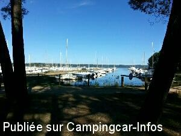
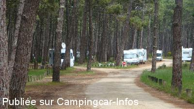
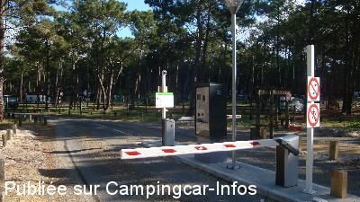
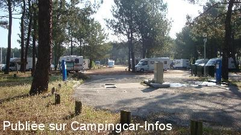
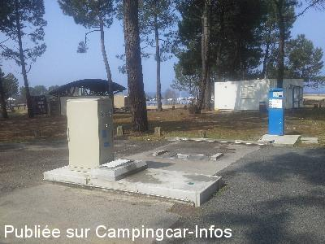
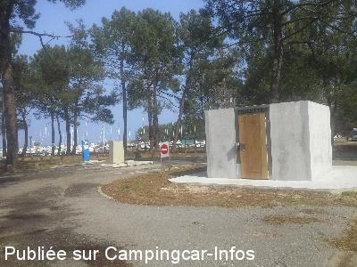

ASN = Aire de services avec stationnement nuit possible de :
BISCARROSSE
(N° 160)
Accès/adresse :
710 chemin de Navarrosse
Port de Navarosse
Leopark
40600 BISCARROSSE LAC
Port de Navarosse
Leopark
40600 BISCARROSSE LAC
Latitude : (Nord) 44.43136° Décimaux ou 44° 25′ 52′′
Longitude : (Ouest) -1.16717° Décimaux ou -1° 10′ 1′′
Tarif : 2016
Stationnement, services : 6,30 à 15 €
Services C-C de passage : 4 €
Borne automatique, paiement par carte bancaire ou monnaies
Type de borne : AIRESERVICES
Services :


Supérette ouverte en haute saison
Sports de voile
Autres informations :
Ouvert toute l'année
100 emplacements, surveillés
30 prises électriques
Navette bus, plage-lac-ville, en haute saison
Tél : +33(0) 558 823 730
commercial@leopark.fr
http://www.campingcarbiscarrosse.fr/spip.php

Le 12/04/2016 par olaf56

Le 08/06/2014 par Jean-François

Le 08/06/2014 par Jean-François

Le 08/06/2014 par Jean-François

Le 14/03/2014 par Toubens

Le 14/03/2014 par Toubens
de
olaf56
le 12/04/2016 :
aire très agréable en avril. tout au bord du petit port. pain et laverie possible au camping des écureuils juste à côté. 8 euros la nuit service compris. pas de route a proximité les enfants peuvent jouer.
aire très agréable en avril. tout au bord du petit port. pain et laverie possible au camping des écureuils juste à côté. 8 euros la nuit service compris. pas de route a proximité les enfants peuvent jouer.
de
xorgine
le 29/11/2015 :
De passage au mois d'Aout 2015 nous n'avons pu avoir l'électricité que grâce à la gentillesse d'un camping cariste qui avait un dérouleur à prises multiples. Donc je pense que 15 € est une somme pour tous donc électricité pour tous sinon cherchez l'erreur ! A part cela aire très agréable.
De passage au mois d'Aout 2015 nous n'avons pu avoir l'électricité que grâce à la gentillesse d'un camping cariste qui avait un dérouleur à prises multiples. Donc je pense que 15 € est une somme pour tous donc électricité pour tous sinon cherchez l'erreur ! A part cela aire très agréable.
de
Catherine
le 31/07/2015 :
Aire très bien gérée.Personnel très gentil et très serviable. Les bornes électriques se trouvent au début de l'aire à droite. Aire située entre deux campings ce qui fait que lors de mon séjour fin juillet, l'aire était très bruyante,. Des jeunes se retrouvaient sur l'aire, parlaient très fort, diffusaient de la musique, criaient. L'aire permet l'accès à la plage ce qui fait qu,il y a beaucoup de passage même aux voitures ayant des accès particuliers. Les campicaristes se sont beaucoup plains du bruit et ils ont du faire appel à la police. Ni la mairie ni la police ne semple pouvoir gérer la situation malheureusement.autrement c'est une aire très agréable.Snack,pizzeria et Resto sympa tout près. Magnifiques promenades en vélo (très belles pistes cyclables) ou à pied.pour le wifi, c'est à l'accueil.
Aire très bien gérée.Personnel très gentil et très serviable. Les bornes électriques se trouvent au début de l'aire à droite. Aire située entre deux campings ce qui fait que lors de mon séjour fin juillet, l'aire était très bruyante,. Des jeunes se retrouvaient sur l'aire, parlaient très fort, diffusaient de la musique, criaient. L'aire permet l'accès à la plage ce qui fait qu,il y a beaucoup de passage même aux voitures ayant des accès particuliers. Les campicaristes se sont beaucoup plains du bruit et ils ont du faire appel à la police. Ni la mairie ni la police ne semple pouvoir gérer la situation malheureusement.autrement c'est une aire très agréable.Snack,pizzeria et Resto sympa tout près. Magnifiques promenades en vélo (très belles pistes cyclables) ou à pied.pour le wifi, c'est à l'accueil.
de
brouste
le 27/04/2015 :
Super cool très bien entretenu calme reposant joli lac avec son petit port bravo les régisseurs pour votre accueil
Super cool très bien entretenu calme reposant joli lac avec son petit port bravo les régisseurs pour votre accueil
de
jean claude
le 28/10/2014 :
le parking du centre Leclerc est autorisé en septembre et octobre -nous y avons passé 2 nuits
le parking du centre Leclerc est autorisé en septembre et octobre -nous y avons passé 2 nuits
de
joel 16
le 02/09/2013 :
Après avoir passé les barrières 1h00 gratuite puis tarif en vigueur.
Pour ceux qui avez l'habitude de passer la nuit sur la parking du Leclerc c'est terminé barrière de hauteur est installé après la fermeture du magasin.
Après avoir passé les barrières 1h00 gratuite puis tarif en vigueur.
Pour ceux qui avez l'habitude de passer la nuit sur la parking du Leclerc c'est terminé barrière de hauteur est installé après la fermeture du magasin.
de
Christian
le 12/08/2012 :
Aire récemment réfectionnée avec une stabilisation des emplacements. Le prix de la nuitée est de 12€, ce qui est exagéré compte tenu des prestations.4€ d'augmentation par rapport à l'année dernière. Le site est bruyant avec un passage continuel de véhicules.
Aire récemment réfectionnée avec une stabilisation des emplacements. Le prix de la nuitée est de 12€, ce qui est exagéré compte tenu des prestations.4€ d'augmentation par rapport à l'année dernière. Le site est bruyant avec un passage continuel de véhicules.